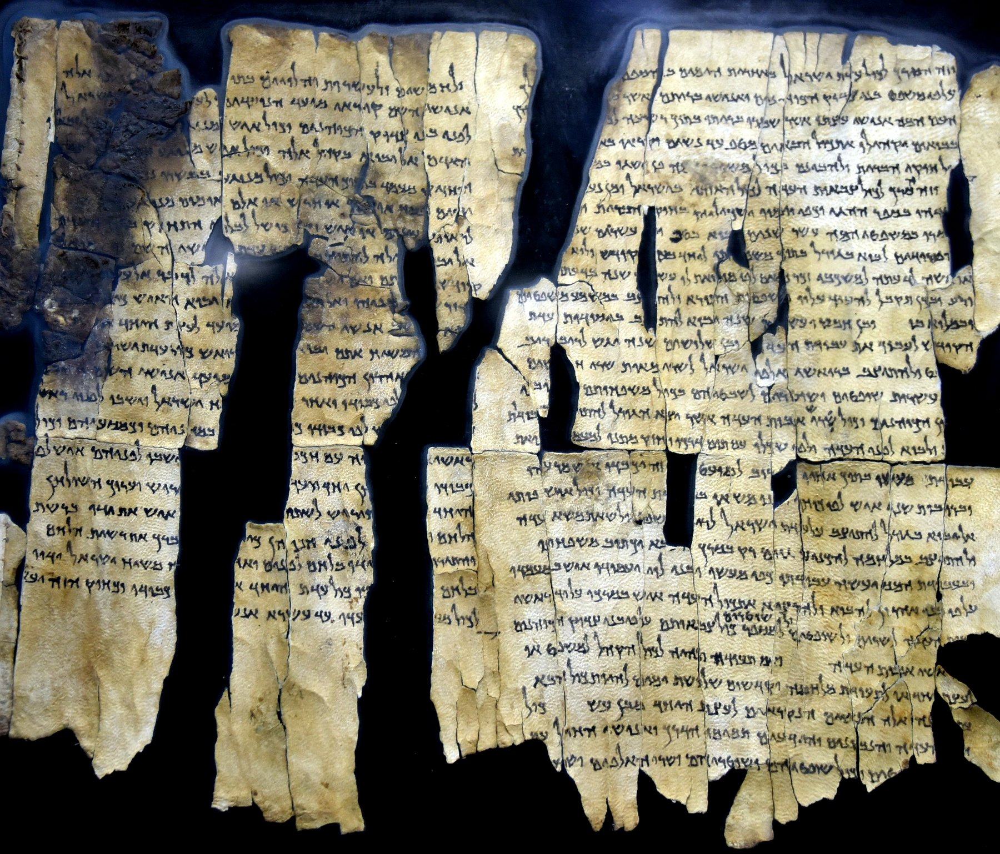

Rule of the Congregation (1QSa)

An appendix on the same Cave 1 scroll as the Community Rule (the scroll dated to 100–75 BC, with composition hypothesized in the 2nd century BC), originally overlooked as a continuation of 1QS and now recognized as a separate composition. It describes an eschatological congregation of men, women and children keeping God's covenant, including a communal meal at which the Priest — the Messiah — presides. It is also attested as 1Q28a and in fragments 4Q249a–i, and only one complete copy is known with certainty.
Interpretations
The Rule of the Congregation shows the sect's end-times hope in communal form: the whole people, families included, gathered under priestly and messianic leadership at a shared meal. Its messianic meal is the sect's own eschatological expectation, not the Last Supper, and the two must not be conflated even though both join covenant, meal and a presiding figure.
Biblical Significance
It preserves the sect's vision of the last-days community — ordered, inclusive of families, and gathered around a messianic meal — a hope that helps explain the world the early church entered.